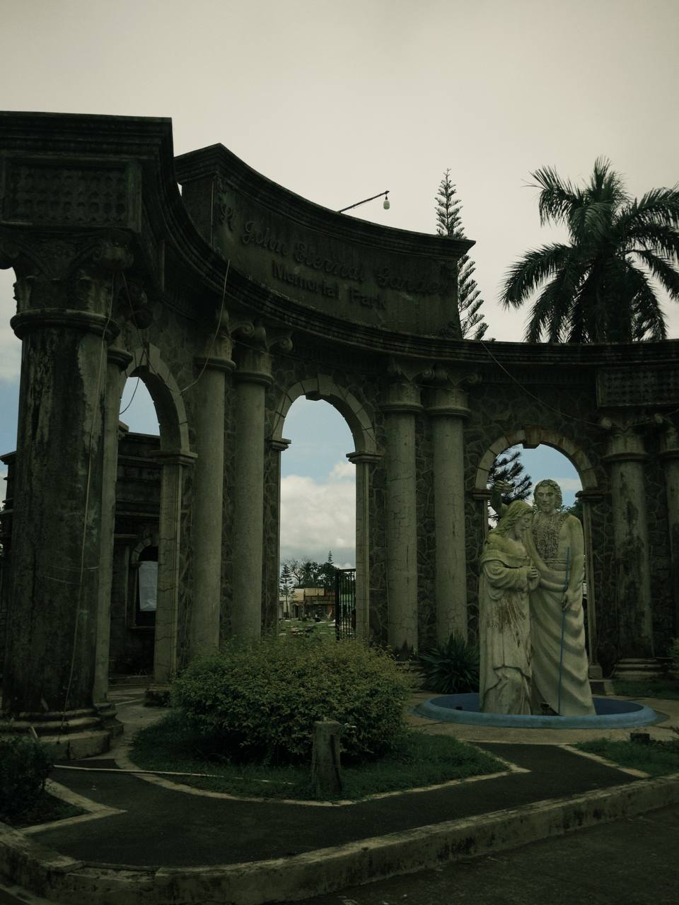

Paniniwala ng nagbebenta ng kandila
.jpg)
Sa paggawa ng kandila, ang pangunahing layunin ng mga gumagawa ay hindi lamang kumita kundi magbigay ng produkto na may kalidad at maayos ang pagkakagawa. Kasama sa proseso ang paniniwala at pagdarasal para sa maayos na kita at kalakalan, na nagiging bahagi ng kanilang tradisyonal na paraan ng paggawa. Bukod dito, binibigyang pansin ang bawat detalye, mula sa pagpili ng waks, paghalo ng mga sangkap, hanggang sa pagtatapos ng produkto, upang masiguro na ang bawat kandila ay maayos at matibay.
Mahalaga rin ang kulay ng kandila sa ilang mamimili dahil ito ay may kahulugan ayon sa nais na layunin o paniniwala. Halimbawa, dilaw ang madalas na pinipili para sa mga estudyante bilang simbolo ng karunungan, puti para sa mga panalangin para sa kaluluwa, pink para sa pag-ibig, at pula para sa iba pang personal na layunin. Ipinapakita nito na sa kabila ng pamahiin at simbolismo, ang tunay na tagumpay sa hanapbuhay ay nakasalalay sa mahusay na paggawa at integridad ng produkto.
Basahin pa →Paniniwala ng nagbebenta ng bulaklak

Limitado lamang ang mga paniniwala ng mga nagtitinda ng bulaklak. May ilan na naniniwala sa kahulugan ng kulay ng bulaklak — halimbawa, ang pula ay sumisimbolo sa pag-ibig, ang rosas para sa kabataan o kababaihan, at ang puti para sa kalinisan at kaluluwa. Wala silang partikular na ritwal na kaugnay sa kanilang hanapbuhay maliban sa mga karaniwang gawain upang mapanatiling sariwa at maganda ang mga bulaklak. Gayunpaman, para sa karamihan, wala namang partikular na paniniwala na direktang nakaaapekto sa kanilang hanapbuhay.
Basahin pa →Paniniwala ng gumagawa ng lapida

Kaunti lamang ang paniniwala o pamahiin sa kanilang hanapbuhay. Halimbawa, bawal uminom ng alak o magpakasasa sa anumang nakakaapekto sa konsentrasyon habang nagtatrabaho upang maiwasan ang pagkakamali. Nakatuon sila sa normal na gawain ng paggawa at wala silang naranasang kababalaghan sa trabaho.
Sa pangkalahatan, nakatuon ang mga gumagawa ng lapida sa kalidad at maayos na paggawa kaysa sa pamahiin o paniniwala. Ipinapakita nito na ang disiplina at maayos na sistema sa paggawa ay mas mahalaga sa propesyonalismo kaysa sa tradisyonal na pamahiin.
Basahin pa →Paniniwala ng naglilinis at nag-aalaga ng puntod

Kaunti lamang ang paniniwala o pamahiin na sinusunod sa kanilang hanapbuhay. Halimbawa, may ilang patakaran tulad ng pagbabawal sa pag-inom ng malamig na tubig habang nagtatrabaho upang maiwasan ang pasma. Sa pangkalahatan, nakatuon sila sa mga praktikal na gawain tulad ng paglilinis, pag-aalaga, at pag-maintain ng kaayusan sa sementeryo.
Ipinapakita nito na ang mga naglilinis at nag-aalaga ng sementeryo ay higit na nakatuon sa pagiging maayos, epektibo, at sistematiko sa kanilang trabaho kaysa sa pagsunod sa pamahiin. Ang kanilang disiplina at dedikasyon ay mas mahalaga kaysa sa mga paniniwala, na nagpapakita na ang tagumpay at kasapatan sa trabaho ay bunga ng kasipagan, maayos na organisasyon, at tamang pag-aalaga sa kanilang responsibilidad.
Basahin pa →Paniniwala ng gumagawa ng ataol o kabaong

Ang mga gumagawa ng kabaong ay may ilang paniniwala na kanilang sinusunod bilang bahagi ng kanilang tradisyon at karanasan sa trabaho. Isa sa mga ito ay ang paniniwala na kapag kukuha ng sukat ng yumao, dapat mula sa paa papunta sa ulo ang pagsukat upang maging maayos ang paggawa ng kabaong at maiwasan ang malas. Bukod dito, iniiwasan din nila ang paggamit ng walang galang na pananalita habang gumagawa bilang tanda ng respeto sa patay.
Hindi ito itinuturing na mahigpit na tuntunin ng lahat — ang mga paniniwalang ito ay nagsisilbing gabay upang mapanatili ang disiplina, pag-iingat, at respeto sa kanilang hanapbuhay. Ipinapakita nito na ang paniniwala ay hindi lamang simpleng pamahiin, kundi maaari ring maging paalala upang mas mapabuti ang kalidad ng paggawa at asal sa trabaho.
Basahin pa →Paniniwala ng make-up artist ng patay

Sa kanilang trabaho, may paniniwala na kailangang maging tahimik, maingat, at magalang habang isinasagawa ang pag-aayos sa yumao. Itinuturing itong mahalagang bahagi ng kanilang gawain upang mapanatili ang dignidad at respeto sa patay at sa naiwang pamilya. Mayroon ding ilang praktis tulad ng paggamit ng hiwalay na make-up na hindi na ibinabalik sa lalagyan at itinatapon pagkatapos gamitin upang masiguro ang kalinisan at maiwasan ang anumang kontaminasyon.
Ang mga paniniwalang ito ay nagsisilbing gabay upang maging mas responsable, disiplinado, at maingat sa kanilang hanapbuhay. Ipinapakita nito na ang paniniwala ay maaaring magsilbing paalala sa tamang asal at etikal na pagsasagawa ng serbisyo. Sa huli, nagiging tulay ito upang mapanatili ang propesyonalismo at respeto sa bawat hakbang ng kanilang gawain.
Basahin pa →